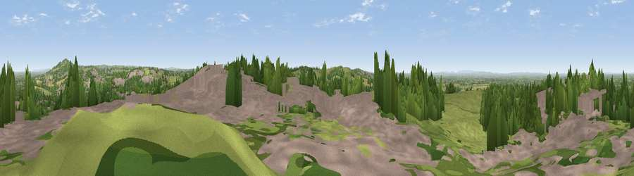

Viewpoint near Talke
#6982 in England · top 7% of its area beats it · near TalkeThe view, rendered

A 360° render of this exact spot computed from the terrain model, tree cover and land cover — summer colours, afternoon light, calibrated against photographs of famous viewpoints. Real trees, hedges and buildings will differ in detail.
The panorama
Grey silhouette: terrain skyline in each direction (720 bearings, Earth curvature and refraction included). Dashed green: skyline with trees (+15 m) and buildings (+8 m) as obstacles. Blue strip: how far the ground is visible on each bearing.
Where the view opens
Wedge length = distance to the farthest visible ground on that bearing (vegetation-aware). Rings at 10, 25 and 50 km.
What fills the view
35% built-up · 32% grassland · 28% woodland · 5% cropland
Angular shares of the visible panorama (visual magnitude), not map area. Landscape diversity 0.54 (0–1 Shannon).
Key numbers
More beautiful places nearby
The staircase of upgrades: each row has a higher view potential than everything closer. Driving times are estimates from straight-line distance, calibrated against real road routing — check an actual route before setting out.
| Place | Direction | Drive | Score |
|---|---|---|---|
| Bignall Hill | SSW · 2 km | ~5 min | 75.2 |
| Viewpoint near Mow Cop | NE · 5 km | ~11 min | 80.2 |
| Viewpoint near Harthill | W · 32 km | ~49 min | 80.5 |
| Viewpoint near Little Wenlock | SSW · 49 km | ~70 min | 84.2 |
| The Wrekin | SSW · 49 km | ~70 min | 85.0 |
| Viewpoint near Little Wenlock | SSW · 50 km | ~71 min | 86.6 |
| North Hill | S · 107 km | ~132 min | 86.8 |
| Worcestershire Beacon | S · 108 km | ~133 min | 87.1 |
53.07642, -2.26080 · source: screening · position refined by local search. Computed location — check access rights before visiting.